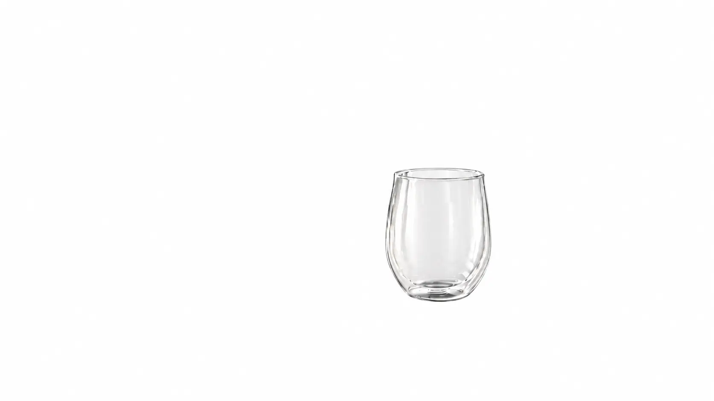
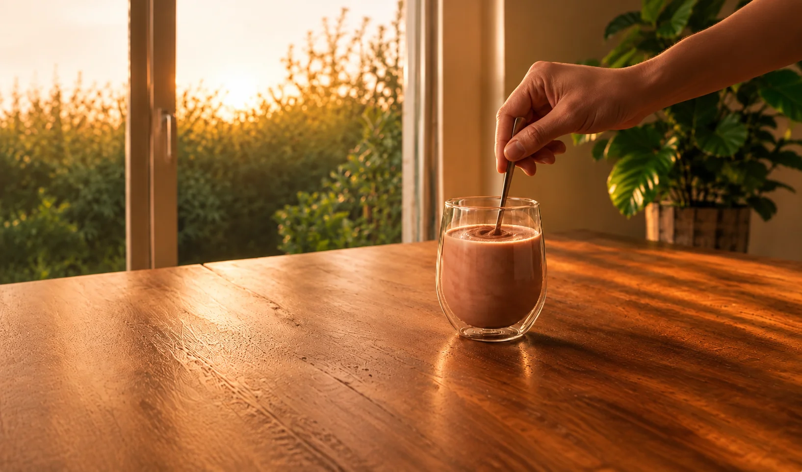
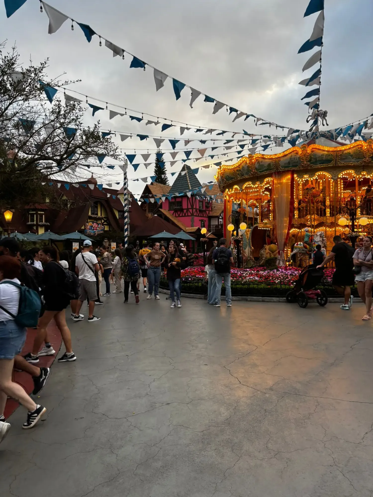
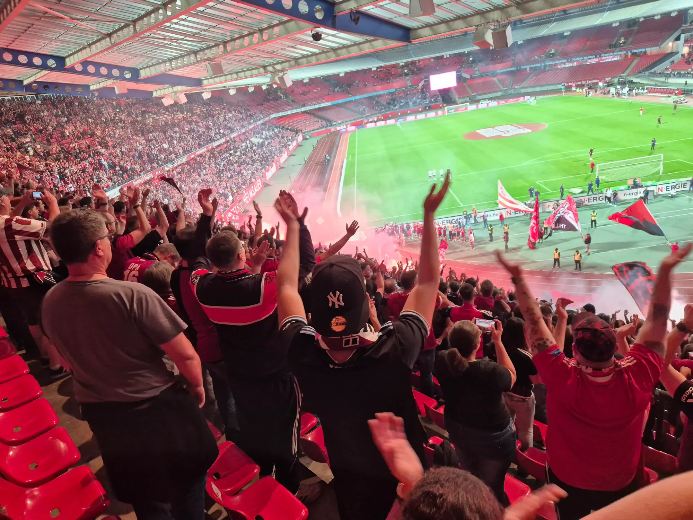
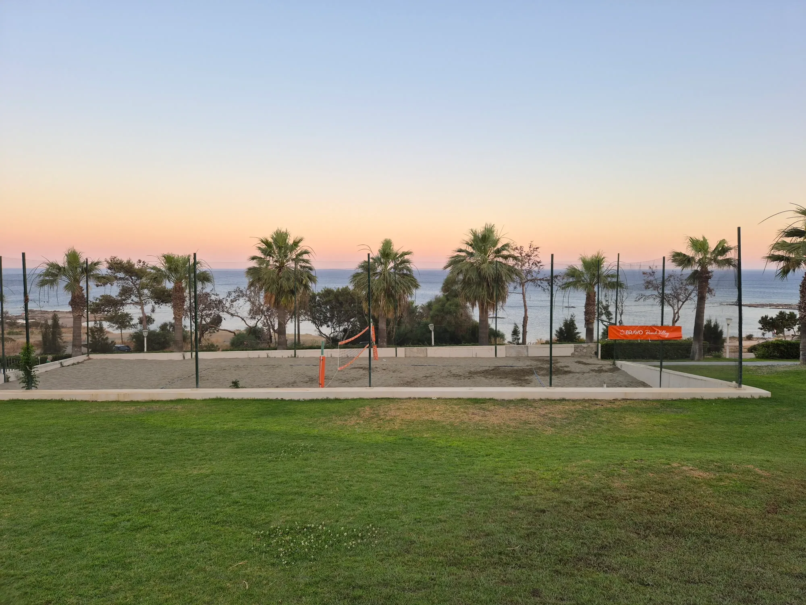
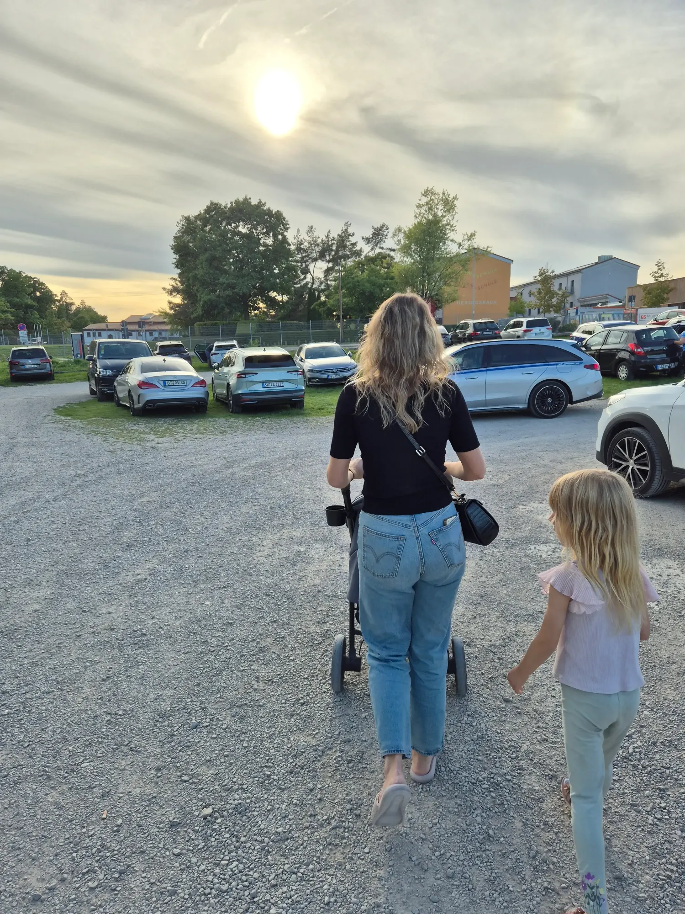
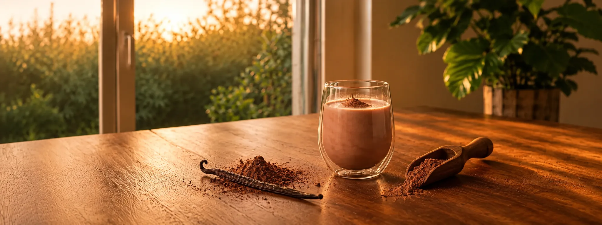
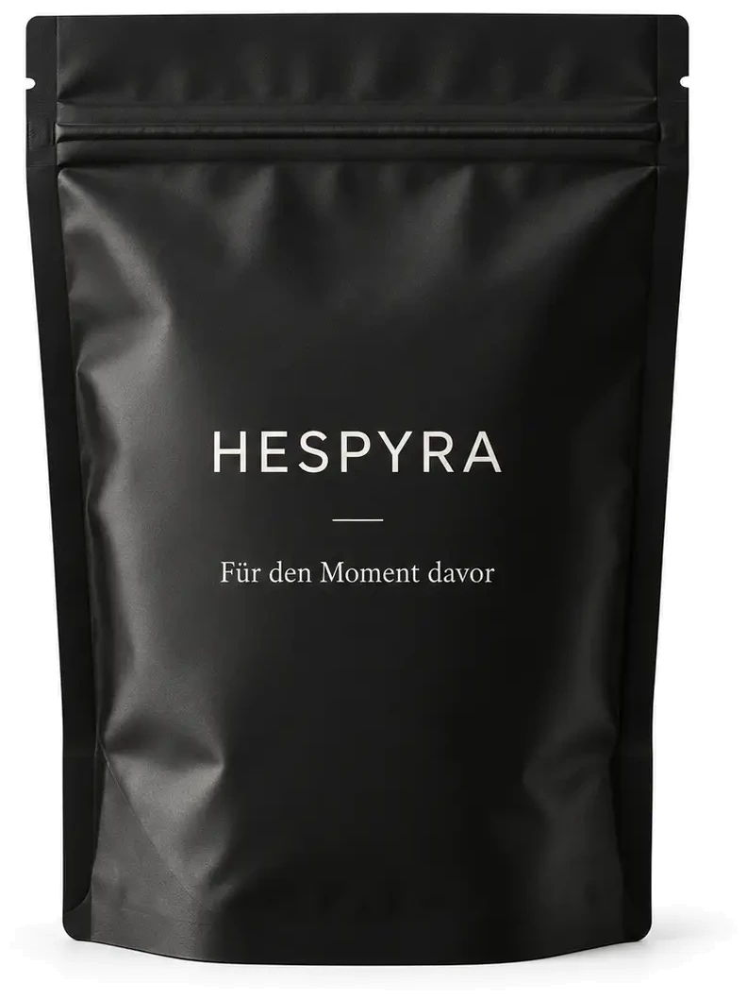
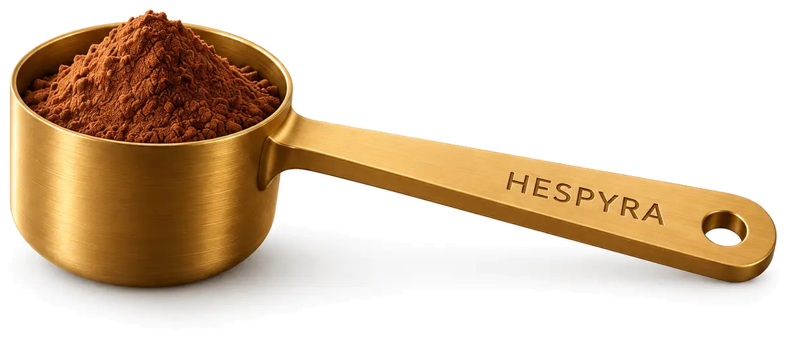

A cocoa with real vanilla.
Just add water.
For the moment before.
Magnesium, L-theanine and saffron.

For the moment before.
Magnesium, L-theanine and saffron.
Preparation
Mixed with water, HESPYRA is ready in a minute. Warm or cold. With oat milk it gets a little creamier.

[place] · [time]
There are quite a few ways to spend a good evening.

Geiselwind · 17:39Carousel, just before closing.

Nuremberg · 19:48Everyone standing, nobody sitting.

Kos · 18:19The court is empty, the sun almost gone.

Heroldsbach · 18:01Back to the car, sun still up.
We have no opinion on which one is right.

First the dark cocoa, then the vanilla. It doesn’t get particularly sweet.
The formula mattered to us. So did looking forward to it.
[place] · [time]
Amounts per serving (6 g).
| Ingredient | Amount per serving |
|---|---|
| Magnesium (bisglycinate and taurate) | 150 mg elemental |
| L-Theanine (from green tea extract) | 100 mg |
| Saffron (Affron®, extract) | 28 mg |
| and eight more ingredients | |
Batch [no.] · Analysis dated [date]
Order

Pouch · 180g
Stand-up pouch 180g, one spoon is one serving.
€[price]
Enough for 30 evenings. Tuesdays count.

Spoon · [brass, finish tbd]
Hopefully. Cocoa describes the taste, not the whole drink.
You can. We will never find out.
Nothing against tea. We like tea. We wanted to make something else. Thanks for asking, Luisa.
HESPYRA is not a sleep aid and contains no melatonin. It is made for the start of your own evening, not for its end.
There isn’t one. We have a price instead.
Last: 3 September, 18:00
It’s 21:40. The evening is still open.
The subject line is a time of day.
Thanks. The first one comes when something has happened.
No discount for signing up. Unsubscribe anytime.